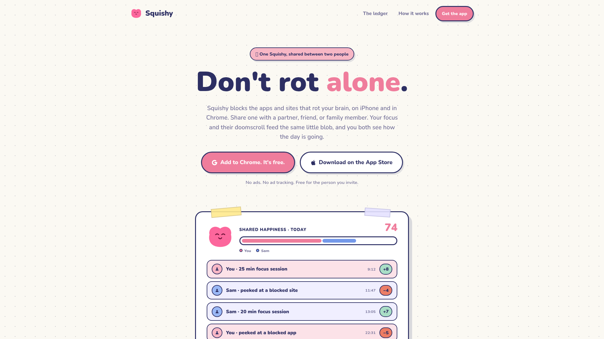
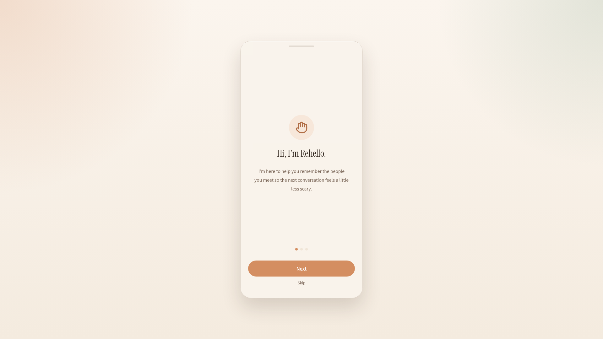
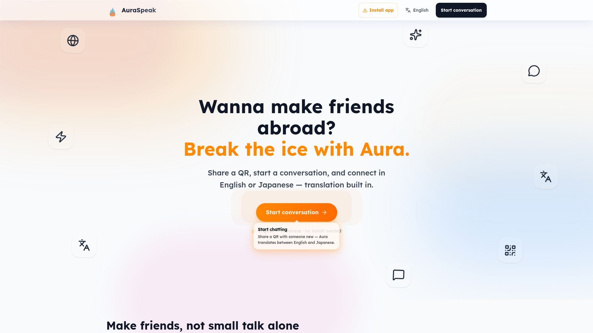
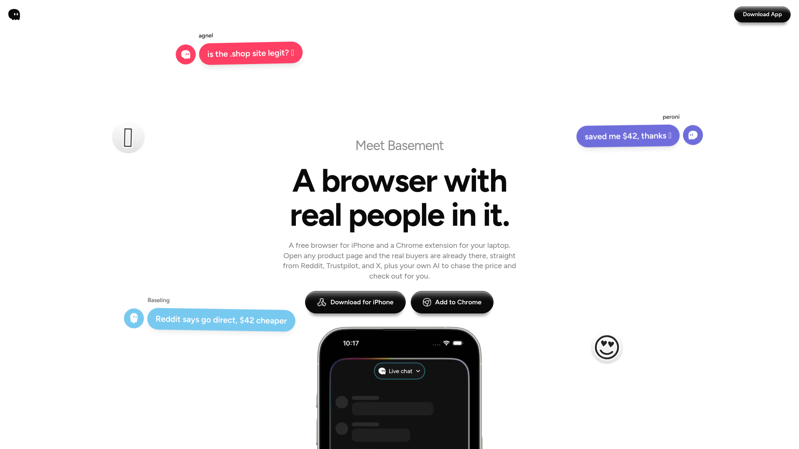
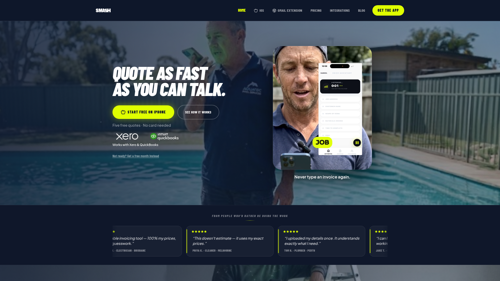

7月24日 周五

Squishy
一个与你信任的人共同照顾的 AI 专注力宠物。在 iPhone 和 Chrome 上使用，它会根据你们的屏幕使用情况而成长或枯萎，把屏幕时间管理变成一场有爱的合作游戏。

Rehello
基于 GPT-5.6 的社交记忆助手，帮助内向者记住所遇之人的信息，让下一次对话不再尴尬。记录社交细节、设置联系提醒、快速回顾聊天话题。

AuraSpeak
通过扫码即可使用的英日实时翻译工具。一方生成二维码，另一方扫码即可进入双语聊天室，消息自动翻译，无需下载任何 App，用完即走。

Basement
AI 购物浏览器，在每一个商品页面为你汇聚 Reddit、Trustpilot、X 的真实用户评价，AI 代理帮你追踪价格并自动完成结账。

SMASH Voice to Invoice
语音生成发票工具，专为现场服务人员设计。30 秒语音描述工作内容，AI 自动匹配价格目录、计算税费，60 秒内生成专业发票。无需打字，适合双手被占用的工作场景。